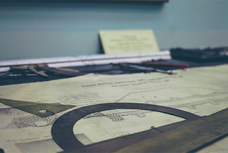

堅持人本建築觀點，執著
工程品質嚴格把關。
建築永遠在變，但購屋者心裡那份「擁有一座理想的房子，並且渴望享受生活、安居樂業」的心是不變的。晉暉建設，耕耘在地18年，自始至終，就是秉持「站在購屋者的立場與角度」，用心在經營建築，更以「安心、寬心、靜心、放心、誠心」五心理念，做為公司自己的企業期許與對消費者的購屋承諾。

五心建築理念
五心建築理念
安心 寬心 靜心 放心 誠心
83 年 晉暉建設公司成立
95 年 榮獲首屆誠信建商認證
96 年 榮獲國家建築金像獎三冠王(金象獎、金獅獎、誠信建商)
99 年 連續五年榮獲誠信建商認證
100年 連續六年榮獲誠信建商認證/金獅獎
101年 連續七年榮獲誠信建商認證/金獅獎
102年 連續八年榮獲誠信建商認證/金獅獎
102年 子公司一逸建設有限公司成立